安装前关闭杀毒软件
1.解压压缩包，解压出两个文件
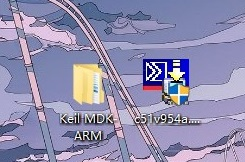
2.进入 Keil MDK ARM \ Keil_MDK_ARM_5.35
回到第6步
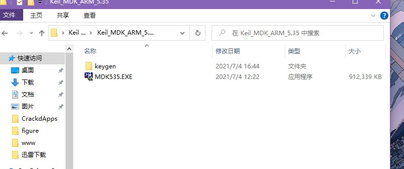
3.双击MDK535.EXE
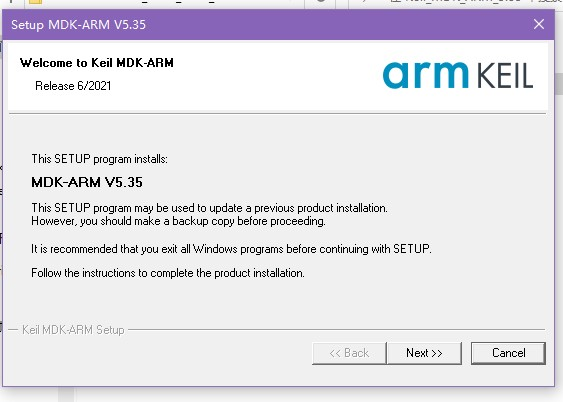
4.一路next和agree，安装位置无所谓， 姓名邮箱随便填，无所谓
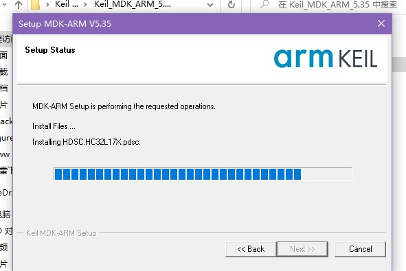
5.取消两个对勾，finish
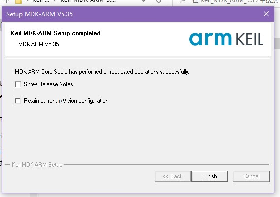
6.关闭所有弹出的窗口（它会阻止你退出，不用管）进入第2步的位置，打开keygen\keygen.exe (有声音，别吓到）
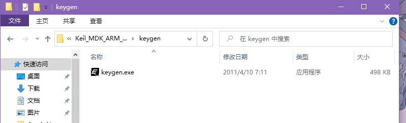
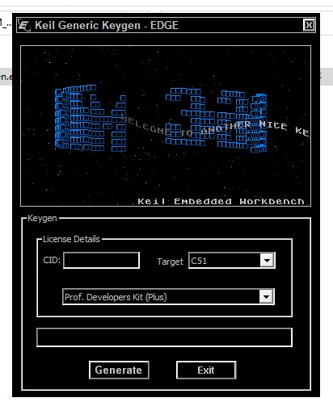
7.右键桌面上的Keil uVision5，选择以管理员身份运行，点击左上角File / License Management
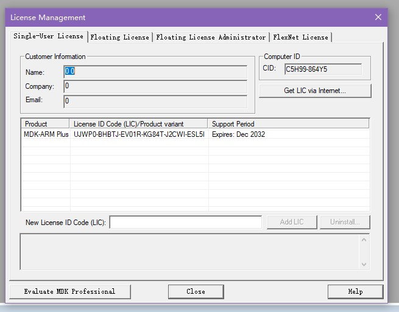
表格里应该是空的，只不过因为之前安装过，所以有证书
8.将Computer ID下面的CID 复制到第6步打开的窗口，CID 栏中,Target 选择ARM，点击Generate ，最下一栏出现一长串密钥，复制下来
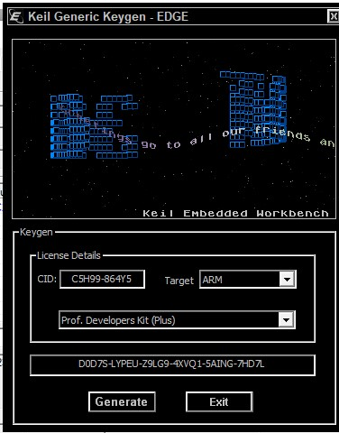
9.将密钥粘贴到New License ID Code后方，点击Add LIC下方出现Successfully，激活成功
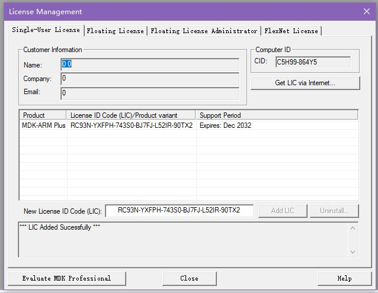
10.关闭所有窗口，打开一开始解压出的c51v954a.exe 一路next和agree
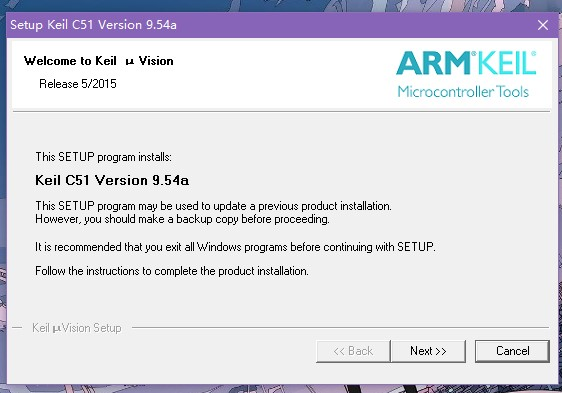
11.选择Replace All，点击Finish ，安装完成
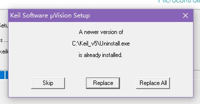